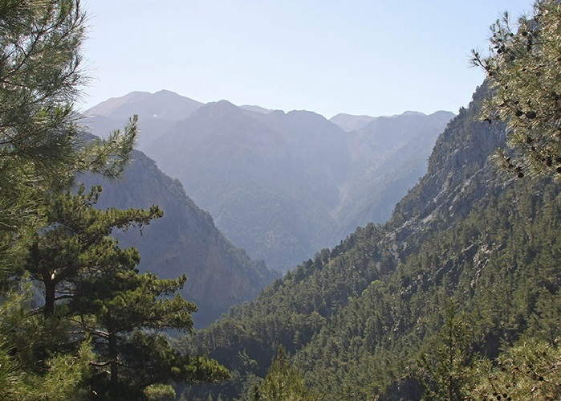
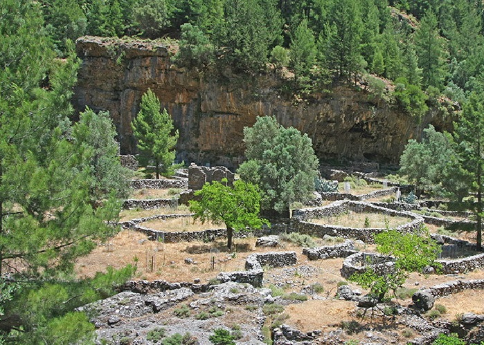

Национальный парк «Самария» — крупнейшее ущелье в Европе, расположено в горах Лефка-Ори на юго-западной оконечности Крита, в общине Сфакион в периферийной единице Ханье в периферии Крит. Одна из наиболее известных достопримечательностей Крита. Длина ущелья около 13 километров, а ширина колеблется от 3,5 до 300 метров. После прохождения контроля в конце ущелья необходимо преодолеть еще 3 километра до деревни Айия-Румели. Есть возможность добраться до деревни на автобусе. Название ущелье получило от названия византийской церкви Преподобной Марии XIV века. Церковь находится чуть ниже бывшей деревни Самария (примерно посередине пути).
В парке присутствует огромное обилие различных видов растительности – более 400 видов (многие из которых эндемики). Другими представителями флоры ущелья: различные виды сосны, платаны, дуб каменный, клён критский, эбеновое дерево и множество других.Также здесь обитает большое количество редких представителей фауны, таких как: критские горные козлы (кри-кри), орлы, белоголовые сипы, галки, беркуты, куропатки и многие другие.
Прогулка по Самарийскому ущелью стоит 5 евро. Дорога открыта с середины апреля до конца октября. Полный маршрут Самарийского ущелья составляет 18 километров. Это расстояние с остановками на отдых проходится за 5-7 часов. Трекинг по ущелью Самарья требует хорошей физической формы и правильной экипировки. Национальный парк открыт с начала мая по конец октября с 6:00 до 16:00. Ущелье может быть закрыто из-за погодных условий (дождь, сильный ветер).